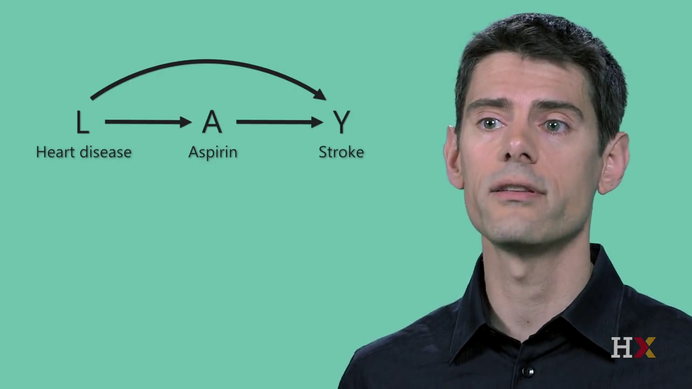
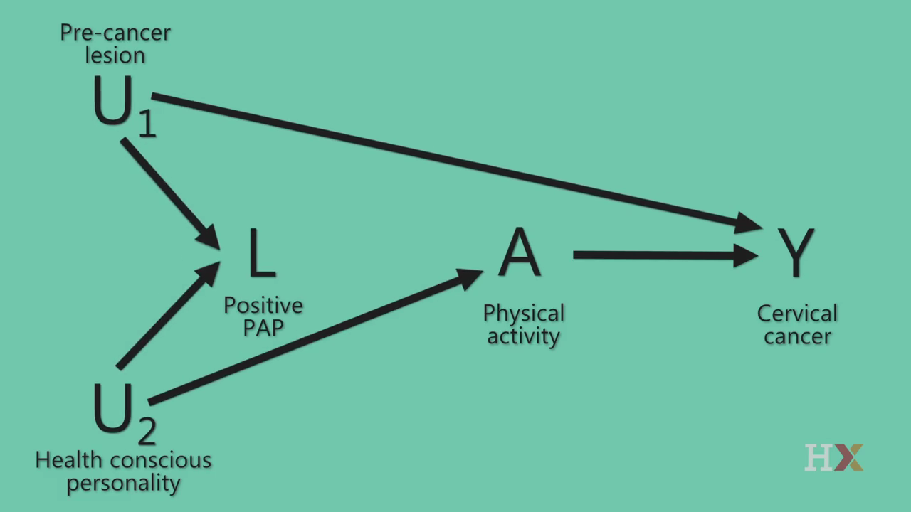

Ecologic Studies and Confounding
APHS 20203 · Epidemiology & Biostatistics
October 14, 2026
Ecologic Studies
Ecologic Studies: Group-level analysis
Unit of analysis: groups (not individuals)
Exposure & outcome: measured at the population level
Common use: explore population patterns; generate hypotheses
Key caution: group-level associations ≠ individual-level conclusions
Take-home message: Ecologic studies are useful for population questions, but cannot establish individual-level causality.
Ecologic Fallacy
Definition: Incorrectly applying group-level findings to individuals
- Occurs when associations observed in populations are assumed to hold at the individual level
Example
Observation: Cities with higher income have higher CHD rates
Incorrect inference: Wealthier individuals have higher CHD risk
Reality: Within cities, CHD risk may be higher among lower-income individuals
Take-home message: Group-level data cannot be used to draw individual-level conclusions.

Ecologic Study: Strengths & Limitations
Strengths
Uses existing population-level data
Efficient: fast and low cost
Useful when individual-level data are unavailable
Limitations
Ecologic fallacy
Crude exposure measurement
Limited control of confounding
Dietary Fat and Breast Cancer Mortality
Study
Sasaki et al. (1993): dietary fat intake & breast cancer mortality
Unit of analysis: countries (30 countries total)
Key finding
Higher animal fat intake was associated with higher breast cancer mortality
Fish fat intake was associated with lower breast cancer mortality
Discussion prompts
What makes this study feasible and efficient?
Why can these results not be interpreted at the individual level?
What other population-level factors could explain the association?
Sasaki S, Horacsek M, Kesteloot H. An ecological study of the relationship between dietary fat intake and breast cancer mortality. Prev Med. 1993 Mar;22(2):187-202. doi: 10.1006/pmed.1993.1016. PMID: 8483858.
Low-Fat Dietary Pattern: Randomized Trial
Study overview
Large randomized controlled trial of a low-fat dietary pattern
Postmenopausal women assigned to intervention or usual diet
Long-term follow-up
Discussion prompts
Why is an RCT an appropriate design for this question?
What features of this study strengthen causal inference?
What challenges might arise in long-term behavioral interventions?
Key takeaway: RCTs strengthen causal conclusions, but feasibility, adherence, and follow-up matter.
Prentice RL, Caan B, Chlebowski RT, et al. Low-Fat Dietary Pattern and Risk of Invasive Breast Cancer: The Women’s Health Initiative Randomized Controlled Dietary Modification Trial. JAMA. 2006;295(6):629–642. doi:10.1001/jama.295.6.629
Group Discussion: Comparing Study Designs
Comparing Two Studies: Think back to the two studies discussed today:
Ecologic study: dietary fat intake and breast cancer mortality
Randomized controlled trial: low-fat dietary intervention
Discussion questions
What is the unit of analysis in each study?
Which study provides stronger evidence for causality, and why?
What kinds of conclusions are appropriate for each design?
Hawthorne Effect
- Definition: participants change behavior because they know they are being observed.
- When it occurs: during clinical trials or behavioral studies, when participants are monitored or aware of measurement.
- Key idea: When behavior changes due to observation, the measured exposure or outcome may not reflect usual behavior.
Exercise: Bias and Behavior Changes
For each scenario, identify the bias or behavior change being illustrated and explain why.
In a case-control study, parents of sick children recall pesticide exposure during pregnancy more carefully than parents of healthy children.
Participants report lower alcohol use in face-to-face interviews than expected from sales data.
In a clinical trial, outcome assessors know which participants received the treatment and rate them more favorably.
Interviewers ask more detailed exposure questions to lung cancer cases than to controls.
Participants increase exercise levels during a study because they know their activity is being monitored.
Reducing Bias
Reducing Selection Bias
Use appropriate comparison groups
Apply clear and consistent inclusion criteria
Minimize loss to follow-up
Ensure recruitment is not related to both exposure and outcome
Reducing Information Bias
Use standardized definitions and procedures
Apply blinding when possible
Collect data consistently across groups
Use validated measurement tools
Key idea: Careful design and consistent measurement strengthen internal validity.
Review: Sample Size and Bias
- Random error: Natural variability in data; affects precision and is generally reduced by increasing sample size.
- Bias: Systematic error arising from study design, selection, or measurement. A larger sample does not generally eliminate bias.
- Existing example: Measuring physical activity at local gyms may systematically overrepresent more active people, even with a large sample.
For information bias: standardized definitions, consistent measurement procedures, and blinding address the measurement process; a larger sample alone does not.
Review: Confounding
Confounding: The effects of other factors become mixed into our estimate of an exposure’s causal effect. Or giving credit to the wrong variable.
Example: Ice cream sales and drownings both increase during hot weather.
- Hot weather influences both ice cream sales and drowning risk.
Question: Would reducing ice cream sales reduce drownings?
Key idea: The association can be real and useful for prediction without representing a causal effect of ice cream sales.
Conventional Confounder Definition
L is a confounder of the effect of A on Y if L meets these three conditions:
- L is associated with A
- L is associated with Y conditional on A
- L is not on a causal pathway from A to Y
Confounders: Part 1

Confounders: Part 3
Confounders: Part 3 Diagram

Poll: Confounder Criteria
Consider a variable associated with the treatment A, associated with the outcome Y within levels of A, and not on a causal pathway from A to Y. Adjustment for such a variable will always reduce bias.
A. True
B. False
Poll: Causal Structure
Generally, we need to use our expert knowledge of the causal structure of a problem to determine whether confounding is present.
A. True
B. False
Addressing Confounding
Confounding cannot be ignored when interpreting results.
Randomization helps balance confounders between groups
In observational studies, researchers must identify and measure potential confounders
Results should be interpreted cautiously if important confounders are not accounted for
Key idea: If confounding is not addressed, an observed association may not reflect a true causal relationship.
Review: Cohort vs. Case-Control
| Feature | Cohort Study | Case-Control Study |
|---|---|---|
| Start With | Exposure | Outcome |
| Direction | Exposure → Outcome | Outcome → Exposure |
| Measure | Relative Risk (RR) | Odds Ratio (OR) |
| Best For | Rare exposures | Rare diseases |
| Time & Cost | Longer, more expensive | Faster, less expensive |
| Main Bias Concern | Loss to follow-up | Selection & recall bias |
| Can Measure Incidence? | Yes | No |
Epidemiology Wrap-Up
Define and explain the foundations of epidemiology
Measure disease using incidence, prevalence, and rates
Describe patterns by person, place, and time
Evaluate association and causality
Distinguish cohort and case-control study designs
Interpret RR, ARD, and OR
Identify major sources of bias and confounding
From Concepts to Your Presentation
The Conceptual Progression
Descriptive Epidemiology
→ Generates hypothesesAnalytic Epidemiology
→ Tests exposure → outcome relationshipsCritical Thinking
→ Distinguish association from causation
For Your Epi Final Presentation
You are expected to:
Clearly describe a population health issue
Include and interpret an analytic study
Identify the study design and measure
Discuss bias, confounding, and limitations
Avoid overstating causality

Social Desirability Bias